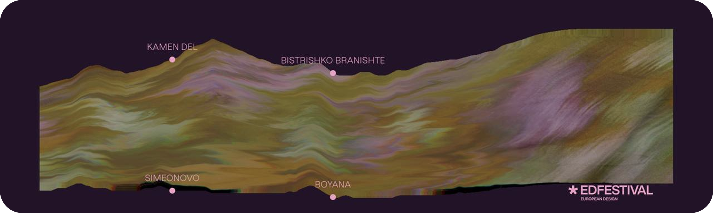
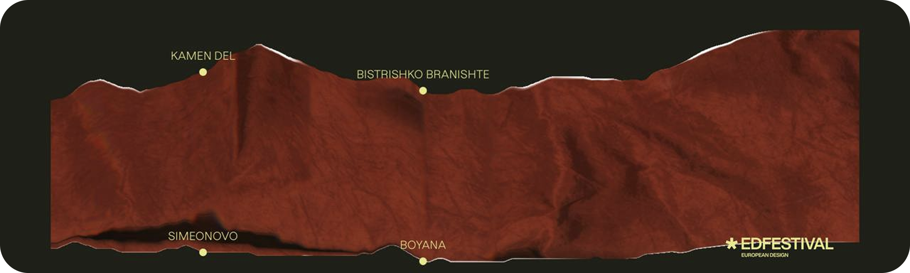
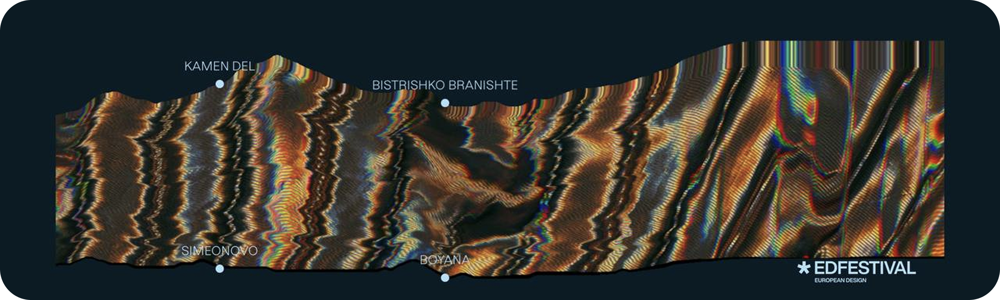

European Design Festival, Sofia · Teaser · 2026
IN THE SKIRTS OF VITOSHA
An interactive landscape experience for the European Design Festival, Sofia 2026.
Concept
The project brings a literal twist to a famous Bulgarian geographical idiom. The neighborhoods nestled at the base of the mountain overlooking Sofia are called „Полите на Витоша“ — literally, “The Skirts of Vitosha.”
My job was to turn this linguistic metaphor into a tactile interaction mechanic. Built strictly for phones held in landscape, the piece let's users manipulate a continuous digital textile. As they scroll, the fabric warps and pulls upward, molding itself into the rugged ridge line of the mountain.



The end screen on each of the three textiles. Every visit to the live site lands on one at random, never the same one twice in a row.
The “prompt engineer” tax:
I'd be lying if I said ”make it better” never left my keyboard. However, my goal was to avoid the trap of vague, repeated prompting that spirals into spaghetti code. Therefore instead of one-shot prompts, I wrote precise, plain-language specs describing the fabric's exact behavior, then made a point of actually understanding the resulting math rather than treating it as a black box, before manually orchestrating the shaders and motion myself.
How a line becomes a mountain
-
The source line
The contours came from the art director as stroke-only SVGs: one path with
fill="none", drawn across the whole panorama. That keeps the skyline easy to redraw at any point in the project, but a path describes curves, not heights — so it gives the GPU nothing it can displace a mesh with. The first job is to measure it. -
Rasterise & Scan each column
The SVG is drawn to an offscreen canvas 1,024px wide, keeping its original aspect ratio. Then each column is scanned from top to bottom. The first pixel whose alpha is above the threshold marks the ridge, and its row becomes the column’s height:
1 − topY / height. The threshold of 20 is low so that it still catches the faint anti-aliased pixels at the edges of the thin stroke.Hover over or drag across the strip to inspect a column. The loupe shows the actual alpha values of the pixels.
-
Guarantee the loop
The panorama repeats forever, because the texture uses
RepeatWrapping. So column 1,023 sits directly next to column 0, and the heightmap has to be periodic for the ridge to stay continuous there. The pipeline doesn’t take that on trust: it eases the outer 8% at each end toward a height the two ends share, on asmoothstepcurve. The join is then exact by construction (the light blur afterwards doesn't reopen it), whatever contour is dropped in, where the ends already measure level, what the easing actually does is flatten those outer columns toward that shared height. -
Blur, but keep the peaks
Because each column is snapped to a whole pixel row, the scan comes out as stair steps, which look like jitter once they’re stretched across a phone screen. A sliding-window box blur fixes that and runs in
O(width), however large the radius. Production uses a minimal blur: radius 1. It removes the steps while keeping Vitosha’s sharp, angular peaks. Increase the radius and the mountain rounds off into rolling hills. You can see it change in the render at the top of the page. -
Pack a 1 × 1024 texture
The 1,024 floats are stored as bytes in a texture one texel tall, so each contour fits in just 4KB.
LinearFilterblends smoothly between neighboring texels.RepeatWrappinglets the shader keep scrolling past the right edge and wrap back to the start. -
One map, two readers
Two parts of the page read the same numbers. The vertex shader samples the texture for every vertex, every frame, and moves the textile up or down, blending from the bottom contour to the top one. The peak, neighborhoods and venue labels are normal HTML elements, so their text stays sharp and accessible. To keep them on the peaks, JavaScript mirrors the shader's calculation using the saved heights array, with the same wrap, mask and amplitude. It then projects the point through the Three.js camera to get a screen position. That is why the dots in the render at the top stay on the ridge while you drag, change the height or switch contour settings.
Behind the Distortion
The fabric's ridge line is traced as an SVG path, then distorted with a handful of extra effects stacked on top. There are three textile and colour variants, each tuned differently; you'll land on one at random, and never the same one twice in a row.
Curious which one you'll get? Scan the QR code below, disable your rotation lock, and turn your phone sideways. I promise the visual is worth it.